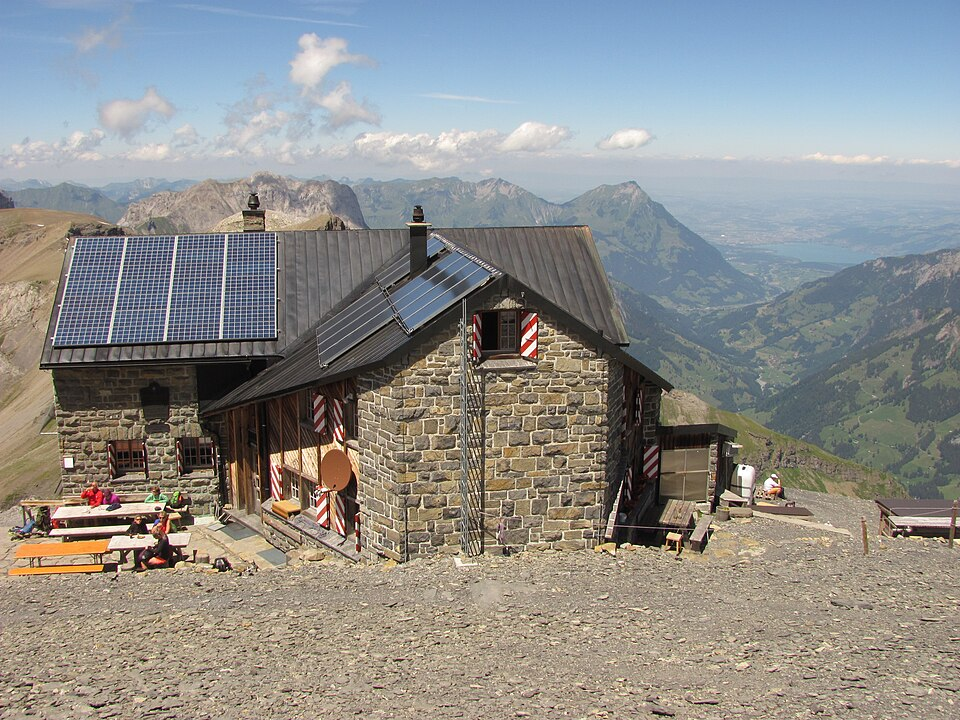

Berner OberlandVom Kander- ins Lauterbrunnental
Die klassische Hüttenroute zwischen Kandersteg und Lauterbrunnen über drei bewirtschaftete Hütten – anspruchsvoll und mit einer aktuellen Zustiegsänderung, die viele Planungen noch nicht berücksichtigen.
Aktueller Stand: Der Normalzustieg zur Fründenhütte ist wegen Bergsturzgefahr
gesperrt. Die signalisierte Alternative über Underbärgli ist mit Fixseilen gesichert (T4,
ca. 4 Std. ab Oeschinensee Bergstation) – ein Klettersteigset wird empfohlen.
Etappenplan, Hütten & Anreise
| Tag | Strecke | Gehzeit | Schwierigkeit |
|---|---|---|---|
| 1 | Oeschinensee → Fründenhütte (Alternativroute Underbärgli) | ca. 4 h | T4 |
| 2 | Fründenhütte → Blüemlisalphütte | 5–6 h | T4+ |
| 3 | Blüemlisalphütte → Gspaltenhornhütte | ca. 5 h 25* | T4 |
| 4 | Gspaltenhornhütte → Mürren (via Rotstockhütte) | ca. 2 h 40* | T3+ |
* Richtwert aus einer Drittquelle, noch nicht SAC-offiziell bestätigt.
- Fründenhütte SAC – online buchbar
- Blüemlisalphütte SAC – online buchbar
- Gspaltenhornhütte SAC – online buchbar
- Rotstockhütte – eigenes Buchungssystem
Anreise ab Bern: 1 h 05, ca. CHF 36
Anreise ab Zürich: 2 h 08, ca. CHF 67
Anreise ab Basel: 2 h 10, ca. CHF 68
Rückreise ab Mürren nach Bern: 1 h 57
Saisonfenster: Juli–September. Startpunkt Kandersteg, vollständig mit ÖV erreichbar.